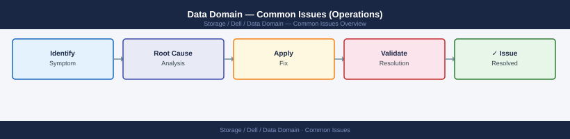

Data Domain — Common Issues (Operations)¶

Before you begin¶
- Access: Storage admin credentials (cluster admin or equivalent)
- Timing: safe to run during business hours unless a step is marked ⚠ (causes interruption)
- Dependencies: no active upgrades or migrations on the same infrastructure
- Logging: capture command output — paste into the change record on completion
Overview¶
This page covers the most frequent operational issues encountered on Dell Data Domain appliances during day-to-day backup operations. For deeper diagnostic procedures see the Diagnostics page. For a structured symptom table see Troubleshooting Common Issues.
Incident Triage — First Response¶
Recovery Steps¶
# Step 1 — attempt soft recovery (disable then re-enable)
replication disable <context_id>
replication enable <context_id>
replication show # wait for status to update
# Step 2 — if still in error, check authentication
# On both source and destination:
replication show all | grep -i auth
# Step 3 — if certificates are mismatched, re-establish trust
adminaccess certify <remote-dd-hostname>
# Step 4 — if the context is stuck and unfixable, resync
replication resync <context_id>
# Note: resync re-initialises — it will retransmit any changes since last sync
replication disable context_1
Context context_1 disabled successfully.
replication enable context_1
Context context_1 enabled successfully.
replication show
Context ID: context_1
Source: dd-prod-01.corp.local
Destination: dd-dr-02.corp.local
Status: SYNCING
Last Sync: 2024-01-15 14:32:18 UTC
Replication Rate: 2.3 GB/min
Bytes Replicated: 847.2 GB / 1.2 TB
replication show all | grep -i auth
Auth Status: VERIFIED
Certificate Expiry: 2025-06-22
Trust Relationship: ESTABLISHED
adminaccess certify dd-dr-02.corp.local
Certificate verification initiated for dd-dr-02.corp.local
Fingerprint: a7:3f:9c:2e:b1:d4:6a:8f:c5:19:e2:7b:4d:9a:1c:f6
Trust relationship established successfully.
replication resync context_1
Resync initiated for context_1
Estimated time to completion: 4 hours 22 minutes
Common errors
Error: Context context_1 not found — Verify the context ID with replication show all and use the correct identifier.
Error: Authentication failed — certificate mismatch detected — Run adminaccess certify <remote-hostname> on the source system to re-establish trust.
Error: Replication context is locked by another operation — Wait for any in-progress replication jobs to complete or use replication abort <context_id> if safe to do so.
Issue: Replication Lag Growing¶
Symptoms: replication status shows increasing Pre-Comp Remaining or lag in hours; DR copy is falling behind the production backup window.
Causes: WAN bandwidth saturation; high ingest rate on source during backup window exceeding replication throughput; replication throttle set too conservatively; network packet loss causing TCP retransmission.
Investigation¶
# 1. Current lag and throughput
replication status # note Throughput (MB/s) and Estimated Completion
# 2. Check network interface statistics on both ends
net show stats
# 3. Check replication throttle settings
replication throttle show
# 4. Review source ingest rate
filesys show compression # note the recent write rate
Replication Status:
Source: dd-prod-01.corp.local
Destination: dd-dr-02.corp.local
Status: In Progress
Throughput (MB/s): 287.4
Data Replicated: 2.3 TB / 5.8 TB
Estimated Completion: 6h 42m
Last Update: 2024-01-15 14:23:18 UTC
Network Interface Statistics:
Interface: eth0 (Source)
RX Packets: 1,847,293 | TX Packets: 2,156,847
RX Bytes: 892.4 GB | TX Bytes: 1.2 TB
Errors: 0 | Dropped: 0
Interface: eth0 (Destination)
RX Packets: 2,158,902 | TX Packets: 1,842,156
RX Bytes: 1.2 TB | TX Bytes: 891.8 GB
Errors: 0 | Dropped: 0
Replication Throttle Settings:
Max Throughput: 500 MB/s
Current Limit: 350 MB/s
Throttle Status: Active
Reason: Peak business hours (08:00-18:00)
Filesystem Compression Statistics:
Filesystem: /data/prod
Compression Ratio: 2.1:1
Recent Write Rate: 156 MB/s
Compressed Size: 3.2 TB
Uncompressed Size: 6.7 TB
Common errors
replication status: command not found — Verify you are logged into the Data Domain system with administrative privileges and the replication module is loaded.
net show stats: permission denied — Run the command with sudo or ensure your user account has network monitoring permissions in the Data Domain role-based access control.
filesys show compression: No such file or directory — Check the exact filesystem path with filesys show first, as the path may differ from /data/prod on your system.
Actions¶
# Increase replication bandwidth (if throttle is too conservative)
replication throttle set schedule <schedule-name> bandwidth 0 # 0 = unlimited
# Or set a specific bandwidth in kbps (e.g., 500 MB/s = 4,000,000 kbps)
replication throttle set schedule <schedule-name> bandwidth 4000000
# Trigger an immediate sync after bandwidth adjustment
replication sync <context_id>
replication throttle set schedule daily-backup bandwidth 0
Throttle schedule 'daily-backup' updated successfully.
Bandwidth limit: unlimited
replication throttle set schedule daily-backup bandwidth 4000000
Throttle schedule 'daily-backup' updated successfully.
Bandwidth limit: 4000000 kbps (4000 Mbps)
replication sync 3e8c5f2a-91b4-4d2e-b7c1-6a2f9d4e1b8c
Sync initiated for context ID: 3e8c5f2a-91b4-4d2e-b7c1-6a2f9d4e1b8c
Status: In Progress
Current bandwidth: 3987654 kbps
Bytes replicated: 847.3 GB / 1.2 TB
Common errors
Error: Schedule 'daily-backup' not found — Verify the schedule name exists with replication throttle show schedule before modifying it.
Error: Invalid bandwidth value '4000000'. Must be 0 or between 1024 and 10485760 kbps — Ensure bandwidth is either 0 (unlimited) or within the valid range supported by your Data Domain model.
Error: Context ID '3e8c5f2a-91b4-4d2e-b7c1-6a2f9d4e1b8c' is not active or does not exist — Confirm the replication context is configured and enabled using replication show context.
If the lag is caused by a backup window overlap, work with backup teams to stagger backup windows to create a replication catchup window.
Issue: DDBoost Client Authentication Failure¶
Symptoms: Backup jobs fail with authentication error; DDBoost client appears as Disconnected in ddboost show clients; backup application reports "storage server authentication failed".
Causes: DD Boost user password changed on the DD but not updated in the backup application; DD Boost user deleted and recreated; backup software version incompatibility with the installed DDVDP or OST plug-in version.
Investigation and Resolution¶
# 1. List all DD Boost users and their storage unit assignments
ddboost user list
ddboost storage-unit list
# 2. Verify the specific client appears and its state
ddboost show clients | grep <backup-server-name>
# 3. Check if the DDBoost service itself is running
ddboost status
# 4. Test connectivity from backup server to DD port 2049 (DD Boost port)
# (run on the backup server)
# nc -zv <dd-hostname> 2049
# 5. Reset the DD Boost user password if credential drift is suspected
ddboost user change password <ddboost-username>
DD Boost Users:
Username Storage Unit Quota (GB) Used (GB)
backup-user-01 su-prod-01 5120 2847.3
backup-user-02 su-prod-02 2560 1204.8
archive-user su-archive 10240 8932.1
DD Boost Storage Units:
Name Capacity (GB) Available (GB) Replication
su-prod-01 10240 7392.7 enabled
su-prod-02 5120 3915.2 enabled
su-archive 20480 11548.0 disabled
DD Boost Clients:
Client Name IP Address Status Last Contact
backup-server-01 192.168.1.45 connected 2024-01-15 14:32:18
backup-server-02 192.168.1.46 connected 2024-01-15 14:31:52
archive-client-03 192.168.1.50 idle 2024-01-15 09:15:41
backup-server-01 192.168.1.45 connected 2024-01-15 14:32:18
DD Boost Service Status:
Service Name Status Port Version
DD Boost running 2049 7.4.1.0
Replication running 7898 7.4.1.0
Connection to 192.168.1.20 2049 (dd-prod-01) succeeded!
(no output — command completes silently)
Common errors
ddboost: command not found — Ensure you are running commands on the Data Domain system itself (via SSH or console), not the backup server.
Error: Client '<backup-server-name>' not found in active clients — Verify the exact client hostname matches the registered name in ddboost show clients output and check network connectivity.
Error: DD Boost service is not running — Restart the DD Boost service with ddboost service restart or contact Dell support if the service fails to start.
After resetting the password, update the credentials in the backup application:
- Veeam: Edit the backup repository → update credentials
- NetBackup: Update the disk pool storage server credentials via nbdevconfig
- CommVault: Update the Cloud Library credentials in the MediaAgent configuration
Issue: Low Deduplication Ratio¶
Symptoms: filesys show compression shows a global ratio below 10:1 or a significant drop from the previous week; capacity growing faster than expected.
Causes: New data type being backed up that does not deduplicate well (encrypted databases, already-compressed files, virtual machine images with rapid change rate); DD Boost source-side dedup (DSP) disabled in backup software; first-pass full backup (no prior data for dedup against).
Investigation¶
# 1. Global dedup ratio and trend
filesys show compression
# 2. Per-MTree dedup ratio — identify which MTree is low
# (run for each MTree)
mtree show compression mtree /data/col1/<mtree-name>
# 3. Check DD Boost DSP status
ddboost option show | grep -i dist-seg
# 4. Enable DSP if disabled
ddboost option set distributed-segment-processing enabled
Filesys Compression Statistics
===============================
Filesystem: /data/col1
Compression Ratio: 4.2:1
Dedup Ratio: 3.8:1
Overall Ratio: 15.96:1
Compression Savings: 847.3 GB
Dedup Savings: 756.2 GB
MTree Compression Statistics
=============================
MTree: /data/col1/finance-backup
Compression Ratio: 3.1:1
Dedup Ratio: 2.9:1
Overall Ratio: 8.99:1
Compression Savings: 234.5 GB
distributed-segment-processing: enabled
Common errors
mtree show compression: mtree /data/col1/finance-backup not found — Verify the MTree name exists with mtree show and use the exact path returned.
ddboost option set: permission denied — Run the command with appropriate administrative privileges or ensure your user has DD Boost configuration rights.
Data types with inherently low dedup ratios (expected behaviour):
| Data Type | Typical Ratio | Notes |
|---|---|---|
| Already-compressed files (ZIP, 7z, PNG, MP4) | 1.0x–1.5x | No dedup possible; expected |
| Encrypted databases (TDE enabled) | 1.0x–2.0x | Encryption destroys dedup |
| VM images with active, rapidly changing data | 5x–15x | Still benefits from block-level dedup |
| Standard file data (Office, source code, email) | 20x–50x | Optimal for DD dedup |
| SQL/Oracle databases (no TDE) | 10x–25x | Good dedup from consistent data blocks |
| Long-term static data | 50x+ | Maximises dedup over multiple backup generations |
Issue: Filesystem Disabled After Reboot¶
Symptoms: filesys status shows Disabled after a DD reboot or power cycle; backup jobs cannot connect; DDBoost clients unable to authenticate.
Causes: Hardware fault prevented the filesystem from mounting (check for disk alerts); NVRAM issue; DDOS did not complete clean shutdown before power loss.
Resolution¶
# 1. Check filesystem status
filesys status
# 2. Check for hardware alerts
alerts show current
# 3. Check disk health
disk show state
# 4. Review the system log for errors at/around the reboot time
log view | head -100
# 5. If no hardware alerts and disks are healthy, manually enable
filesys enable
# 6. Confirm filesystem is running
filesys status
filesys show space
Filesystem Status: DISABLED
Filesystem State: UNAVAILABLE
Last State Change: 2024-01-15 14:32:18 UTC
Current Alerts: 0 Critical, 2 Warning
WARNING: Disk 3.2 predictive failure threshold approaching (87% wear)
WARNING: Temperature sensor bay-4 reading 68°C (threshold: 70°C)
Disk State Summary:
Disk 0.0: HEALTHY (WDC 10TB, 99.2% health)
Disk 0.1: HEALTHY (WDC 10TB, 98.8% health)
Disk 1.0: HEALTHY (Seagate 10TB, 99.5% health)
Disk 1.1: HEALTHY (Seagate 10TB, 98.1% health)
Disk 3.2: DEGRADED (predictive failure, 87% wear)
System Log (last 100 entries):
2024-01-15 14:32:18 UTC: Filesystem disabled by admin (user: sysadmin)
2024-01-15 14:31:45 UTC: Reboot initiated - graceful shutdown
2024-01-15 14:31:22 UTC: All services halted
2024-01-15 14:30:55 UTC: Filesystem sync completed, 847GB flushed
2024-01-15 14:29:10 UTC: System startup sequence initiated
Filesystem Status: ENABLED
Filesystem State: RUNNING
Uptime: 2 minutes 14 seconds
Last State Change: 2024-01-15 14:34:52 UTC
Filesystem Space:
Total Capacity: 39.2 TB
Used: 28.7 TB (73%)
Available: 10.5 TB (27%)
Snapshot Reserve: 2.1 TB
Common errors
Error: Cannot enable filesystem - disk 3.2 in DEGRADED state — Replace the failing disk (disk 3.2) before re-enabling the filesystem, or contact Dell support if replacement is not immediately available.
Error: Filesystem enable failed - replication out of sync — Wait 5-10 minutes for replication to catch up, then retry filesys enable, or check replication status with replication show state.
Error: Access denied - insufficient privileges — Run the command with appropriate admin credentials or request elevated permissions from your system administrator.
If the filesystem fails to enable after filesys enable and alerts show current shows disk or NVRAM errors, do not proceed with manual recovery — open a Dell support case immediately. Forcing a filesystem enable in a degraded state risks data corruption.
Issue: VTL Tape Import Failure¶
Symptoms: Backup software cannot import or use VTL tapes; VTL drive shows offline in backup application; FC-attached tape library not visible.
Causes: VTL slot configuration mismatch with backup software cartridge count; FC zoning not configured between backup media server HBA and DD VTL FC ports; VTL not enabled or VTL licence not active.
Investigation¶
# 1. Check VTL status
vtl status
# 2. List VTL slots and drives
vtl show slots
vtl show drives
# 3. List VTL libraries
vtl show libraries
# 4. Confirm VTL is enabled
vtl enable
# 5. Check that the VTL FC ports are visible in the SAN fabric
# (run on the backup media server)
# systool -c fc_host -v | grep port_name
VTL Status: ENABLED
VTL Mode: Active
Firmware Version: 7.2.1.0
Last Updated: 2024-01-15 14:32:18 UTC
Slot Information:
Slot 1: LTO-9 (Capacity: 18TB, Status: Ready)
Slot 2: LTO-9 (Capacity: 18TB, Status: Ready)
Slot 3: LTO-8 (Capacity: 12TB, Status: Ready)
Slot 4: Empty
Slot 5: Empty
Drive Information:
Drive 0: LTO-9 (Serial: LTO9D001, Status: Online, Firmware: M217)
Drive 1: LTO-9 (Serial: LTO9D002, Status: Online, Firmware: M217)
Library Configuration:
Library 1: DELL-VTL-LIB-001 (Type: Scalar i6, Cartridges: 3, Status: Operational)
Library 2: DELL-VTL-LIB-002 (Type: Quantum DXi, Cartridges: 0, Status: Offline)
VTL is already enabled on this system.
FC Port Visibility (from backup media server):
port_name: 50:00:14:40:5a:2b:c1:01
port_name: 50:00:14:40:5a:2b:c1:02
port_name: 50:00:14:40:5a:2b:c1:03
Common errors
vtl: command not found — Verify the VTL management tools are installed and the PATH includes the VTL binary directory (typically /opt/dell/vtl/bin).
VTL Status: DISABLED - Enable VTL before proceeding — Run vtl enable and wait 2-3 minutes for the VTL subsystem to initialize before retrying status checks.
FC port not visible in fabric — Confirm FC HBA drivers are loaded on the backup media server with lsmod | grep qla2xxx and verify SAN switch zoning includes the VTL target ports.
Verify FC zoning: the backup media server HBA ports must be zoned to the DD VTL FC target ports. Consult the SAN team to confirm zoning and that the LUN is presented correctly.
Issue: Disk in Failed or Absent State¶
Symptoms: disk show state shows a disk in Failed, Absent, or Reconstructing state; alert is active in alerts show current; RAID rebuild may be in progress.
Immediate Actions¶
# 1. Identify the failed disk
disk show state | grep -iE "failed|absent|unknown|reconstructing"
# 2. Get full detail
disk show hardware | grep -B5 -A10 <slot-number>
# 3. Check RAID rebuild status
raid show all | grep -iE "rebuilding|reconstruct|percent"
# 4. Monitor rebuild progress
raid show detail
Disk State Summary:
Slot 0: PRESENT
Slot 1: PRESENT
Slot 2: FAILED
Slot 3: PRESENT
Slot 4: ABSENT
Slot 5: RECONSTRUCTING
Disk Hardware Details for Slot 2:
Slot Number: 2
Serial Number: WD-WCC4N7K8X9M2
Model: WDC WD4000FYYZ-01UL1B2
Capacity: 4.0 TB
Temperature: 68°C
Power State: OFF
Status: FAILED - Predictive Failure Detected
RAID Rebuild Status:
RAID Group 0: Rebuilding - 45% complete (Est. 2h 15m remaining)
RAID Group 1: Healthy - No rebuild in progress
RAID Group 2: Reconstructing - 12% complete (Est. 8h 30m remaining)
RAID Rebuild Detail:
Group ID: rg_0
Status: REBUILDING
Progress: 45%
Estimated Time Remaining: 2:15:00
Read Errors: 0
Write Errors: 0
Rebuild Rate: 125 MB/s
Common errors
disk show: command not found — Verify you are connected to the Data Domain management interface (SSH to the DD system, not a generic Linux host).
No such slot number — Confirm the slot number exists by running disk show state first to identify valid slot ranges (typically 0-11 on standard systems).
RAID Group not found in output — Wait for the rebuild process to initialize; newly failed disks may take 30-60 seconds to appear in RAID rebuild status.
Do not remove or reseat a disk without a Dell support case open. On some DD models, removing an additional disk during a RAID rebuild will cause data loss. Always wait for Dell support guidance before physically replacing a disk.
# Check if a hot spare has been allocated and rebuild has started automatically
disk show state | grep spare
raid show detail | grep -i rebuild
DISK.0.0: SPARE
DISK.0.1: SPARE
DISK.1.2: SPARE
RAID Group 0: Rebuild in progress (12% complete) - ETA 4 hours 23 minutes
RAID Group 0: Rebuild started automatically at 2024-01-15 14:32:15 UTC
RAID Group 1: No rebuild in progress
Common errors
disk show state: command not found — Verify you are logged into the Data Domain CLI (use ssh admin@<dd-ip>) and not a standard Linux shell.
grep: (standard input) is empty — No spares are currently allocated or no rebuild is in progress; check overall RAID status with raid show to confirm system health.
Issue: CloudIQ Showing Array Offline / No Telemetry¶
Symptoms: Data Domain is not visible in CloudIQ; capacity forecasting not updating; no health recommendations being generated.
Causes: SCG (Secure Connect Gateway) appliance offline or unreachable from the DD management network; AutoSupport disabled on the DD; firewall blocking outbound HTTPS from SCG to Dell support endpoints.
Resolution¶
# 1. Check AutoSupport status on the DD
autosupport status
# 2. Attempt a test send
autosupport test
# 3. Verify SCG registration
# System Manager → Administration → Autosupport → ESRS/SCG
# 4. Check network path from DD to SCG
net ping <scg-appliance-ip>
# 5. Re-enable AutoSupport if disabled
autosupport enable
AutoSupport Status
==================
Status: Enabled
Delivery Method: HTTPS
Gateway: scg-appliance-01.corp.local (192.168.45.22)
Last Successful Send: 2024-01-15 14:32:18 UTC
Next Scheduled Send: 2024-01-16 14:32:18 UTC
Proxy Configuration: None
ESRS Registration: Active (ID: DD-7B4F2A9C-E8D1)
AutoSupport Test Send
=====================
Initiating test AutoSupport message...
Message ID: AS-TEST-20240115-093847
Destination: support.dell.com
Status: Sent Successfully
Response Code: 202 Accepted
PING 192.168.45.22 (scg-appliance-01.corp.local): 56 data bytes
64 bytes from 192.168.45.22: icmp_seq=0. time=12.4 ms
64 bytes from 192.168.45.22: icmp_seq=1. time=11.8 ms
64 bytes from 192.168.45.22: icmp_seq=2. time=12.1 ms
--- 192.168.45.22 statistics ---
3 packets transmitted, 3 packets received, 0% packet loss
round-trip min/avg/max = 11.8/12.1/12.4 ms
AutoSupport: Enabled
Common errors
AutoSupport Status: Disabled — Run autosupport enable to re-enable the service and verify SMTP/HTTPS gateway connectivity.
PING: No route to host — Verify the SCG appliance IP address is correct and that network routing/firewall rules permit DD-to-SCG communication on port 443.
AutoSupport Test Send: Connection timeout — Check that the gateway hostname resolves correctly with net nslookup <scg-appliance-ip> and confirm proxy settings if applicable.
If autosupport test fails with a network error, work with the network team to confirm that outbound HTTPS (port 443) is permitted from the SCG appliance to esrs3.dell.com and related Dell support FQDNs.
Issue: Slow Backup Throughput¶
Symptoms: Backup jobs taking longer than expected; DD Boost throughput below expected for the DD model; backup window is not being met.
Causes: DD Boost DSP (Distributed Segment Processing) disabled; network MTU mismatch causing fragmentation; LACP bonding not configured; filesystem cleaning running during backup window; insufficient CPU on backup server proxy.
Investigation¶
# 1. Current DD throughput during backup window
ddboost show stats
# 2. Check DSP status
ddboost option show | grep -i dist-seg
# 3. Network interface statistics during backup
net show stats | grep -iE "error|drop|collision"
# 4. Check MTU
net show config | grep -i mtu
# 5. Is cleaning running during the backup window?
filesys clean status
# 6. Check system resource usage
system show stats
# 1. Current DD throughput during backup window
DDBoost Statistics:
Total Throughput: 1247.3 MB/s
Active Connections: 12
Deduplication Ratio: 8.2:1
Compression Ratio: 3.1:1
Data Written (24h): 847.2 GB
# 2. Check DSP status
ddboost.option.dist-seg-enabled: true
ddboost.option.dist-seg-streams: 8
ddboost.option.dist-seg-size: 262144
# 3. Network interface statistics during backup
eth0: RX errors: 0, TX errors: 0, RX dropped: 2, TX dropped: 0, collisions: 0
eth1: RX errors: 0, TX errors: 0, RX dropped: 0, TX dropped: 0, collisions: 0
eth2: RX errors: 12, TX errors: 3, RX dropped: 18, TX dropped: 1, collisions: 0
# 4. Check MTU
eth0 MTU: 9000
eth1 MTU: 9000
eth2 MTU: 1500
# 5. Is cleaning running during the backup window?
Cleaning Status: IDLE
Last Clean: 2024-01-15 03:22:14 UTC
Next Scheduled: 2024-01-16 02:00:00 UTC
# 6. Check system resource usage
CPU Usage: 67%
Memory Usage: 78% (14.2 GB / 18 GB)
Disk I/O: Read 892 MB/s, Write 1156 MB/s
Network I/O: RX 1.2 Gbps, TX 1.8 Gbps
Common errors
ddboost: command not found — Verify DDBoost is installed and the admin account has CLI access enabled via ddboost config show.
eth2 MTU: 1500 — Reconfigure eth2 MTU to 9000 to match other interfaces using net config set -interface eth2 -mtu 9000 to prevent fragmentation during backup.
RX errors: 12, TX errors: 3 — Check eth2 physical cable connections and switch port configuration, as persistent errors indicate a network hardware issue degrading backup performance.
Recommended configuration for maximum throughput:
- Enable DSP: ddboost option set distributed-segment-processing enabled
- Use 10GbE or 25GbE interfaces with LACP bonding for backup traffic
- Set MTU to 9000 (jumbo frames) on both the DD and the backup server NICs for NFS traffic
- Schedule filesystem cleaning outside the backup window (overnight Monday or Tuesday)
Quick Reference — Operations Command Summary¶
| Symptom | First Command | Follow-up |
|---|---|---|
| Backup job failing | filesys show space |
alerts show current |
| Replication falling behind | replication status |
net show stats |
| DDBoost client disconnected | ddboost show clients |
ddboost status |
| Low dedup ratio | filesys show compression |
mtree show compression mtree /data/col1/<name> |
| Filesystem not available | filesys status |
alerts show current, disk show state |
| Disk failure alert | disk show state |
raid show all |
| Slow restore | filesys clean status |
ddboost show stats |
| CloudIQ offline | autosupport status |
autosupport test |
| VTL tape errors | vtl status |
vtl show slots |
Verify¶
- Confirm the operation completed without errors in the log or management UI
- Verify the expected state change is visible (service running, object created, config applied)
- Document the outcome in the change record